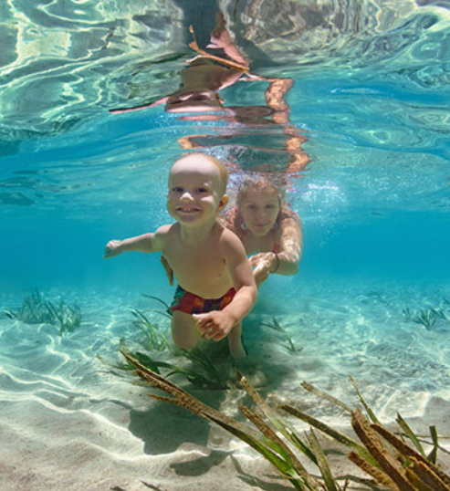

EL AGUA DEL MAR
SALUD Y BIENESTAR
0. UNA AMIGA OLVIDADA
Debemos tener en cuenta la aportación que puede hacer el agua de mar a nuestras vidas.
Algunas características comunes de la sangre y el agua de mar son que ninguna de las dos se puede reproducir en
laboratorio, otra es la capacidad de homeostasis (autorregulación de propiedades), la siguiente es la presencia
específica y similar de oligoelementos (elemento químico indispensable), también podemos encontrar en las dos un
poder antibiótico y autoregenerador (Zobell ya declaraba en 1936 que los vertidos de aguas residuales al mar
quedaban destruidos en dos días).
A modo de resumen, unos cuantos datos de utilidad:
- En el agua de mar están todos los elementos basicos para la vida en proporción correcta y en estado biodisponible.
- El cuerpo necesita aproximadamente 6 gramos de sal diarios. Que más natural que darselos en su propio medio.
- Se intenta aportar conciencia para la creación de dispensarios marinos en partes del planeta que son muy pobres y que la desnutrición afecta a millones de seres que podrían ser tratados con el agua de mar.
- En Estados Unidos también se está empleando agua de mar para problemas de próstata, psoriasis, alopecia, artritis, osteoporosis, asma, gengivitis, desequilibrios del sistema nervioso central (SNC), alcoholismo, drogodependencia, infecciones, fatiga crónica, embarazo, lactancia, estrés, etc.
- El agua marina es la más equilibrada de todas las aguas termales. Al sumergirnos en ella a una temperatura de unos 33º C, sus sustancias nutritivas penetran en el cuerpo por la acción del calor (vasodilatación). Los niveles normales de autodefensa y el equilibrio natural de nuestro cuerpo.
- El Dr. Schlegel declara la desaparición de la pirosis (Sensación de fuego o quemadura en el estómago que llega hasta el esófago) en gastritis alérgicas.
- Los niveles normales de autodefensa y el equilibrio natural de nuestro cuerpo.
- En el agua de mar están todos los elementos basicos para la vida en proporción correcta y en estado biodisponible.
- Entre otras cosas las mejoras detectadas son: Importante mejora en los rendimientos deportivos, rehidratación de la piel, mejoras en fosas nasales (respiración, ronquidos, sinusitis).